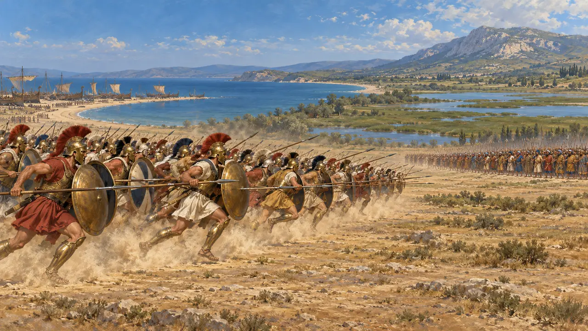
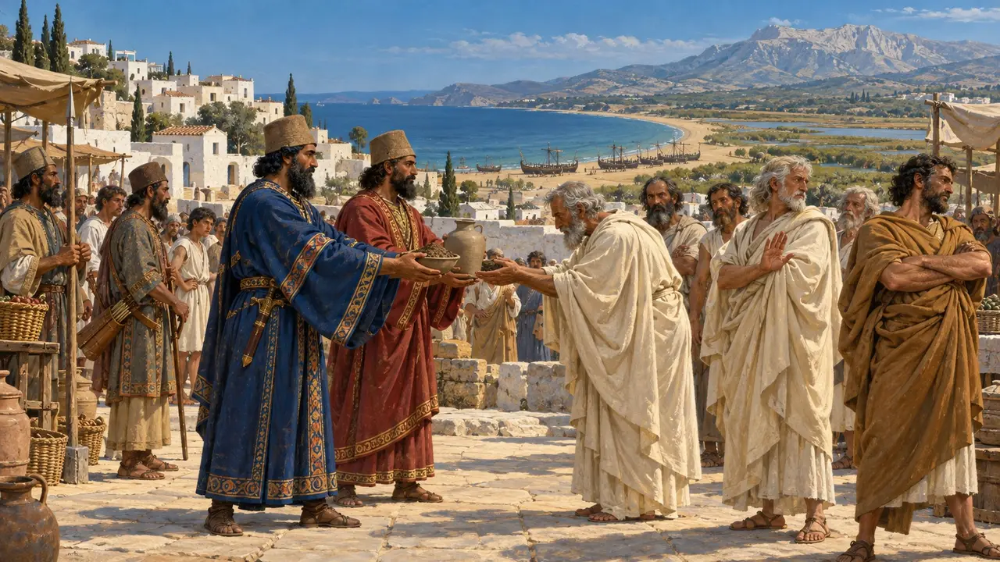
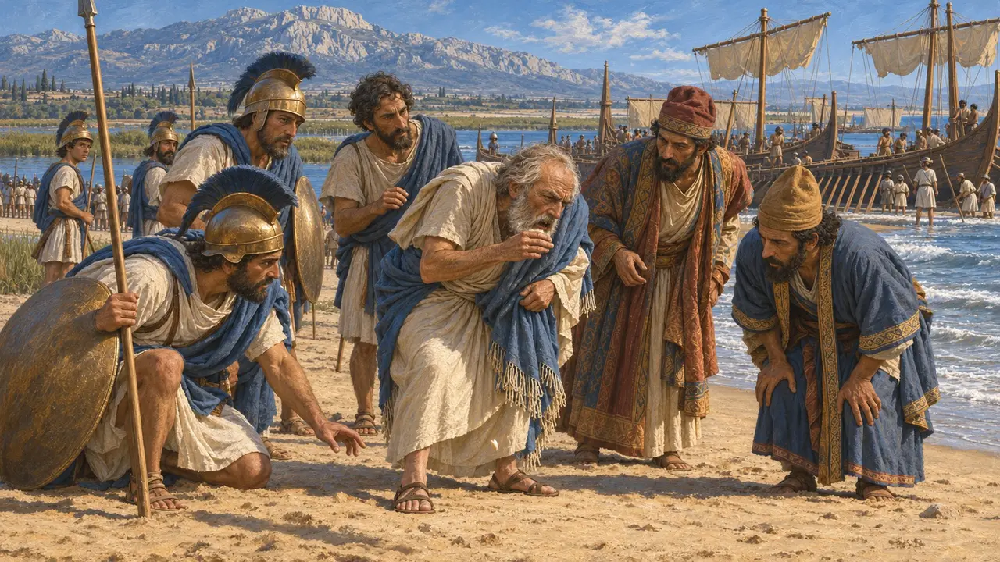
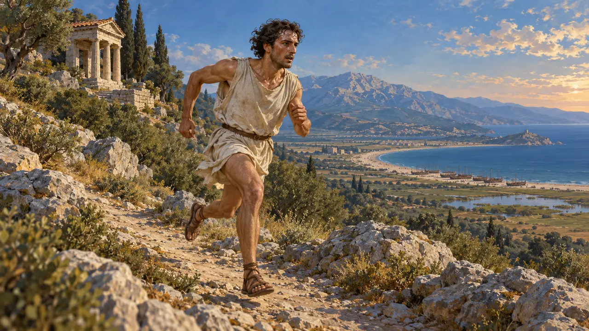
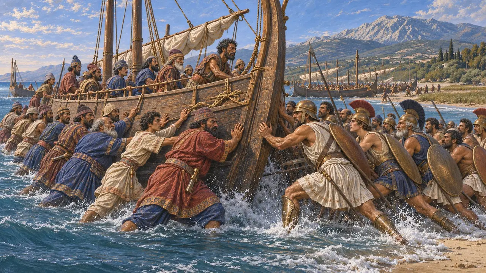
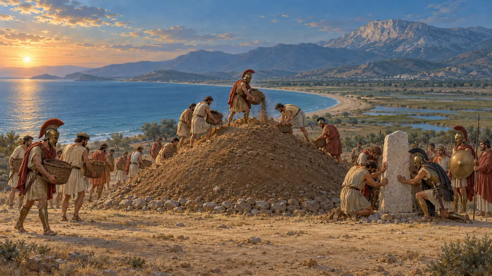

Livello 8: La baia di Maratona · Maratona · 490 a.C.
La baia di Maratona
Gli Ateniesi avanzano di corsa a Maratona, 490 a.C.
Enciclopedia › La storia
Nel 490 a.C. Dario inviò Dati e Artaferne attraverso l'Egeo con navi per il trasporto dei cavalli, per punire Eretria e Atene per Sardi. Eretria cadde. A Maratona Ateniesi e Plateesi caricarono e respinsero l'esercito del Re fino alle sue navi.

- 492 BCE Flotta naufragata presso l'Athos
- 491 BCE Terra e acqua
- 490 a.C. Delo; Eretria
- 490 a.C. Maratona
- 490 a.C. Doppiando il Sunio





Il corridore
Leggenda posterioreErodoto racconta che Filippide corse fino a Sparta, circa 240 km, in due giorni; gli Spartani non vollero mettersi in marcia prima della luna piena. La corsa da Maratona ad Atene per annunciare la vittoria compare per la prima volta in Plutarco e Luciano, cinque secoli dopo. La gara moderna nasce da quella leggenda.
Herodotus 6.105-106; Plutarch, Moralia 347c; Lucian, A Slip of the Tongue 3
La carica
Racconto anticoGli Ateniesi, dice Erodoto, furono i primi Greci a caricare di corsa, per otto stadi. Il centro persiano sfondò, ma le ali greche ebbero la meglio e lo chiusero in una morsa. Erodoto conta 6.400 caduti persiani e 192 ateniesi.
Nel gioco: Solo gli opliti di Maratona conservano lo scatto: avanzarono di corsa.
Herodotus 6.109-117

Presso le navi
Racconto anticoI Greci inseguirono i Persiani fino alla spiaggia e catturarono sette navi. Cinegiro, fratello del drammaturgo Eschilo, ebbe la mano mozzata mentre si aggrappava a una poppa. Il resto della flotta riuscì a fuggire.
Nel gioco: Difendi l'accampamento presso le navi: lo scontro nella tua città.
Herodotus 6.113-115

Lo scudo sul monte
ContesoUno scudo balenò dalle alture e la flotta doppiò capo Sunio diretta ad Atene. Gli Ateniesi rientrarono in città in tempo. Ad Atene si discusse a lungo su chi avesse dato il segnale; Erodoto difende la famiglia degli Alcmeonidi, che ne fu accusata.
Herodotus 6.115-124

Il Soros
Nelle fontiI caduti ateniesi furono sepolti sul campo sotto un grande tumulo, il Soros, ancora alto circa nove metri. Quando fu scavato nel 1890 conteneva ceneri, ossa e ceramiche databili intorno al 490.
Thucydides 2.34; V. Staïs, excavation of 1890
Read next: the topics of La baia di Maratona
Battaglie ed eventi
La spedizione di Dati e Artaferne · La caduta di Eretria · La battaglia di Maratona
Edifici
Soldati e navi
Popolazione
Dario il Grande · Artaferne · Dati il Medo · Ippia · Filippide · Callimaco
Popoli
I Persiani · Gli Ioni · Gli Ateniesi · Gli Eretriesi · I Plateesi · Gli isolani
Fauna e clima
Cervi · Il cinghiale · La cicogna bianca · La lepre · La volpe · Anatre selvatiche · La pernice · Il nibbio · Il piccione selvatico · La taccola · La gru · La rondine · Gabbiani · Pipistrelli · La civetta · La cornacchia grigia · Foschia mattutina